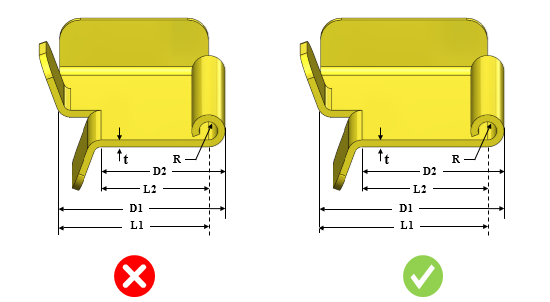

カール部と曲げ部の最小距離を板厚で割った比率は、推奨値以上である必要があります。
適切な曲げ加工を行うためには、カール部と曲げ部の間に一定の（最小）距離を確保する必要があります。距離が不十分な場合、工具とカール部が干渉し、損傷が発生する可能性があります。
カール部と内側曲げとの最小距離は、板厚の4.5倍に内側半径の2倍を加えた値以上とする必要があります。
カール部と外側曲げとの最小距離は、板厚の4.5倍に内側半径の2倍を加えた値以上とする必要があります。
DFMProはカール部と曲げ部の距離を識別し、距離と板厚の比率を算出して、設定された値と照合します。曲げは、カール部の位置に基づいて内側曲げまたは外側曲げとして定義されます。
ユーザーは、デフォルトで設定されている比率を編集できます。

ここでは、
t = 板厚
D1 = カール部から内側曲げまでの最小距離
D2 = カール部から外側曲げまでの最小距離
L1 = カール開始エッジから内側曲げまでの距離
L2 = カール開始エッジから外側曲げまでの距離
R = 内側半径